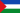

Organización territorial de Costa Rica
Según la Constitución Política en su artículo 168, la división territorial de Costa Rica está organizada por ley en tres tipos de entidad subnacional:
Actualmente la organización territorial comprende de 7 provincias, 84 cantones y 488 distritos. La División Territorial Administrativa de la República define con fundamento en las leyes, decretos, acuerdos tomados por la Comisión Nacional de la División Administrativa y situaciones de hecho la demarcación de estos territorios. El decreto más actual de la misma corresponde al N°41548-MGP del 28 de enero de 2019.
Historia

Escudo de Costa Rica. Las 7 estrellas representan las 7 provincias
Con la instauración de la república y la declaración de Costa Rica como República libre, soberana e independiente, se aprobó la Constitución Política de 1848 el 30 de noviembre de ese año, y según la Ley n.º 36 del 7 de diciembre de 1848, se estableció por primera vez las denominaciones de provincia, cantón y distrito. Según la mencionada ley, se crearon las provincias de:
- San José, con un cantón y diez distritos parroquiales.
- Alajuela, con dos cantones y ocho distritos parroquiales.
- Cartago, con dos cantones y trece distritos parroquiales.
- Heredia, con un cantón y siete distritos parroquiales.
- Guanacaste, con cuatro cantones y ocho distritos parroquiales.
Dicha ley catalogaba a Puntarenas como comarca, categoría hoy en desuso. El decreto legislativo n.º 10 del 17 de septiembre de 1858, le confiere a Puntarenas el título de ciudad.
El decreto n.º 27 del 6 de junio de 1870 creó la comarca de Limón, a partir del territorio más oriental de la Provincia de Cartago, y permitió el establecimiento de un ayuntamiento. No sería hasta 1902, bajo el decreto legislativo n.º 59 del 1 de agosto que se constituyó en la séptima y última de las provincias que comprende el territorio nacional.
De 1848 a 2022 la cifra de cantones en el país ha pasado de 10 a 84. El último cantón en ser constituido es el de Puerto Jiménez (antiguo distrito de Golfito en la provincia de Puntarenas). Los distritos, por su parte, han experimentado mayor flexibilidad en su proceso de constitución, por lo que su número cambia constantemente. Por ejemplo, en la actualidad se tienen 488 distritos, cuando en el año 2000, al realizarse el censo de población los distritos eran 463.
Organización provincial
Provincias de Costa Rica
Política y administrativamente, Costa Rica está conformada por 7 provincias:
| Provincia | Código ISO | Capital | Cantones | Distritos | Población | Superficie |
|---|---|---|---|---|---|---|
 San José San José |
SJ | San José | 20 | 123 | 1 696 265 | 4965,90 |
 Alajuela Alajuela |
A | Alajuela | 16 | 116 | 1 068 258 | 9757,53 |
 Cartago Cartago |
C | Cartago | 8 | 51 | 550 655 | 3124,67 |
| Heredia | H | Heredia | 10 | 47 | 546 139 | 2656,99 |
| Guanacaste | G | Liberia | 11 | 61 | 410 055 | 10 140,71 |
| Puntarenas | P | Puntarenas | 13 | 60 | 516 326 | 11 265,69 |
 Limón Limón |
L | Limón | 6 | 30 | 474 527 | 9188,52 |
Guanacaste es la única provincia de Costa Rica cuya capital no es la homónima a la provincia. Su capital es Liberia.
El cantón de San José tiene una peculiaridad, su capital es San José, pero ninguno de los distritos del cantón actualmente se denomina «San José».
Las banderas provinciales y cantonales son las mismas cuando se llaman igual la provincia y el cantón.
Organización cantonal
El concepto de Municipalidad o Ayuntamiento recae en la entidad subnacional de segundo nivel (los cantones), gobernados por un alcalde elegido cada cuatro años en elecciones generales, así como un Concejo Municipal (ver régimen municipal de Costa Rica). Según la Constitución Política, artículo 169:
La administración de los intereses y servicios locales en cada cantón estará a cargo del Gobierno Municipal, formado de un cuerpo deliberante, integrado por regidores municipales de elección popular, y de un funcionario ejecutivo que designará la ley."
Organización distrital
Cada cantón se encuentra dividido en distritos cuyo número varía de cantón en cantón. Cada distrito tiene un Concejo de Distrito presidido por un síndico, todos de elección popular. El Concejo de Distrito es el interlocutor entre el distrito y el gobierno municipal y vela por los intereses comunales y vecinales ante el Concejo Municipal, si bien la administración directa del distrito recae en el municipio, los Concejos de Distrito ejercen también funciones administrativas como remitir proyectos al Concejo y supervisar las labores del alcalde.
Cada distrito posee un identificador único de cinco dígitos el cual es a su vez el código postal y es utilizado también por el Instituto Nacional de Estadística y Censos de Costa Rica.
Otras subdivisiones
De acuerdo a la División Territorial Administrativa existen las siguientes definiciones como subdivisiones de cantones o distritos:
- Ciudad: Título otorgado al mayor centro urbano del cantón en el que se ubica la sede del municipio. Ocurren tres excepciones en la que la ciudad abarca más de un distrito:
- La ciudad de San José en su condición de Capital de la República, conformada por los once distritos del cantón de San José.
- La ciudad de Cartago se compone de los distritos Occidental y Oriental.
- La ciudad de Puntarenas abarca los distritos Puntarenas, Chacarita y El Roble.
- Capital de Provincia: Es la ciudad (definida en el punto anterior) que tiene la condición de encontrarse ubicada en el cantón primero de cada una de las provincias de Costa Rica.
- Asentamiento: Conjunto de viviendas agrupadas en zona rural, donde sus residentes se dedican a labores agropecuarias en fincas facilitadas por el gobierno con el fin de cumplir con objetivos económicos y sociales.
- Barrio: Conjunto de viviendas agrupadas generalmente dentro de la ciudad, cuyos habitantes comparten actividades socioculturales y un sentido de pertenencia con objetivos económicos y sociales similares.
- Caserío: Conjunto de viviendas, casi siempre dispersas, especialmente en zona rural, que tiene alguna proximidad y comparten un territorio. Las fincas (de 8 o más viviendas) que reúnan las características de¡ concepto de caserío se tomarán como una localidad, siempre y cuando sus habitantes reconozcan el nombre de esa finca como la localidad donde habitan.
- Localidad: Todo lugar ocupado con una o más estructuras utilizadas como viviendas, las cuales tienen que ser habitables, pueden estar ocupadas o no, este lugar es reconocido por un nombre otorgado por ley (oficial) o comúnmente conocido (por costumbre).
- Poblado: Conglomerado de viviendas, que pueden estar dispersas o en forma lineal, con edificaciones que brindan servicios básicos tales como educación (escuela), salud (EBAIS), recreación (plaza de deportes) e iglesia.
Territorios indígenas
En Costa Rica existen 24 territorios indígenas debidamente delimitados por el gobierno central y que tienen autonomía limitada. Estos territorios son administrados por las Asociaciones de Desarrollo Indígena como gobierno local según Decreto n.º 13568-G del Poder Ejecutivo.